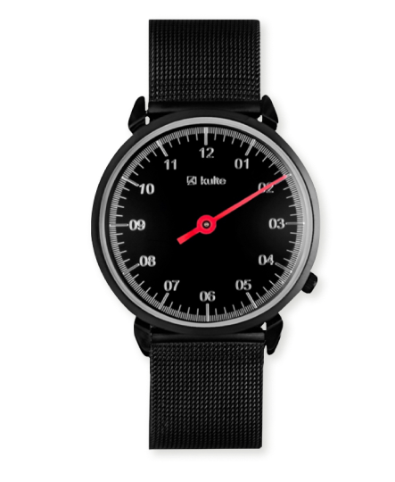
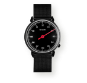
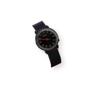
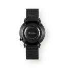
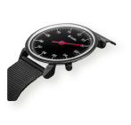

KULTE, 26 ММ
12 700 

Описание

Технические характеристики
Наручные часы KULTE, разработанные датским дизайнером Хэннингом Коппелем, были выпущены в 1982 году. Они были встречены аплодисментами, а дизайн считался революционным.
Общая эстетика минималистична, а острые, плавные линии корпуса стали легендарными. Механизм Swiss Made обеспечивает высокий уровень технических характеристик.
Наручные часы KULTE — это образец датского дизайнерского наследия, история баланса и точности как внутри, так и снаружи.